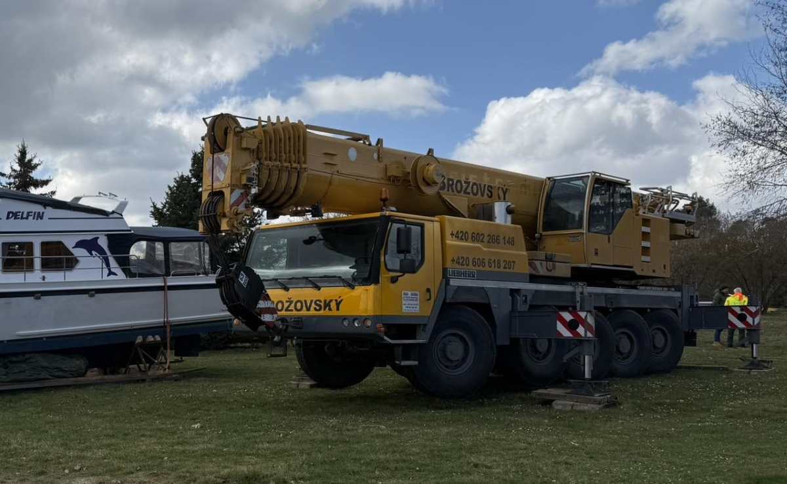
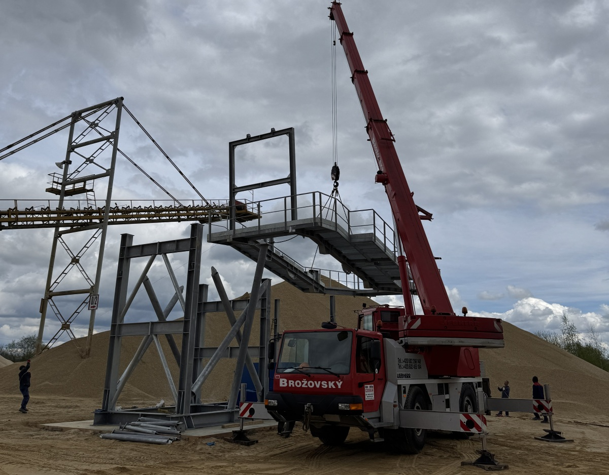
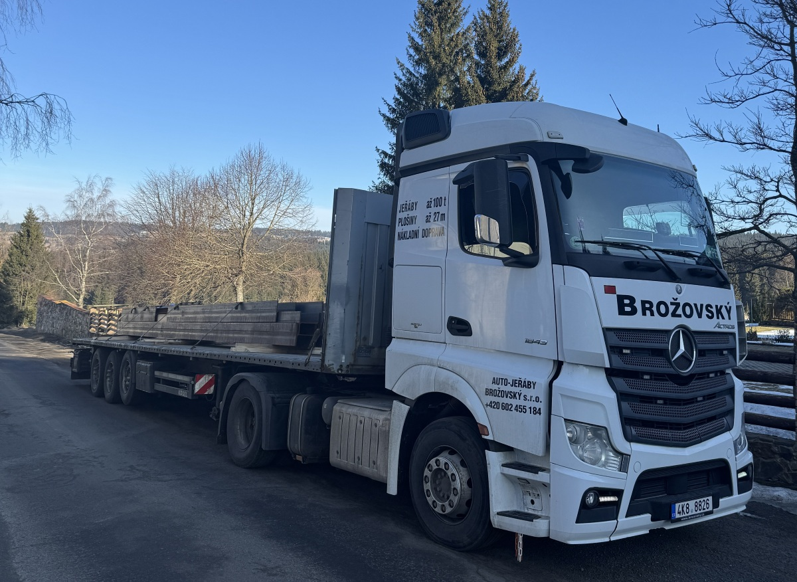
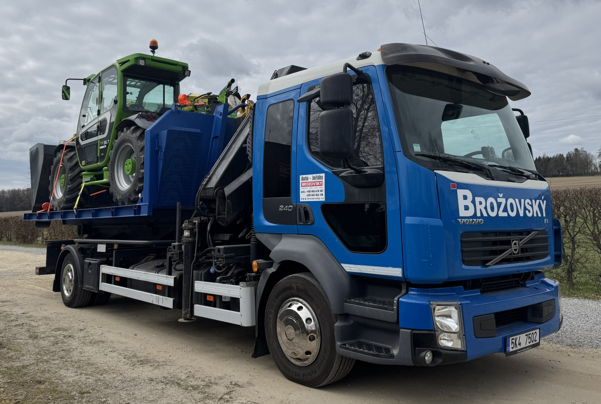
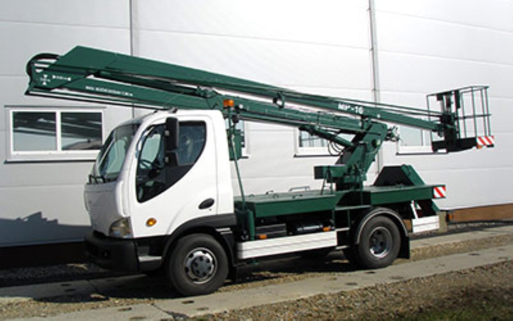

Liebherr LTM 1100
Náš nejtěžší kalibr, s nosností až 100 tun a dosahem přes 50 metrů.

Náš nejtěžší kalibr, s nosností až 100 tun a dosahem přes 50 metrů.

Menší, praktický jeřáb s nosností až 30 tun a dosahem 30 metrů, s možností prodloužení.

Tahač Actros s platem, převoz všeho druhu s možností vozit až 28 tun.

Nákladní kontejnerové auto s možností vozit náklad do 5 tun, s hydraulickou rukou s nosností 2,5 tuny. Kontejner plato a stavební.

Kloubová plošina na autě s dosahem 16 metrů.
Při práci v terénu je dovezeme s sebou, aby jeřábování probíhalo hladce a bezpečně.
K pronájmu. Ochrání zahradu či louku před úplným rozježděním.
Vše s vámi pečlivě zkonzultujeme a bezplatně se dojedeme podívat na místo práce.